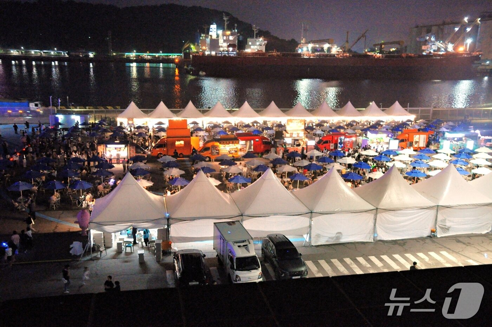
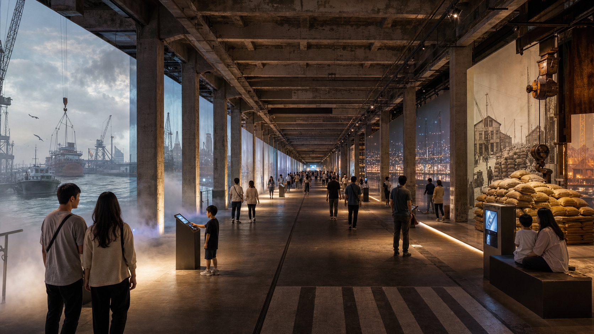
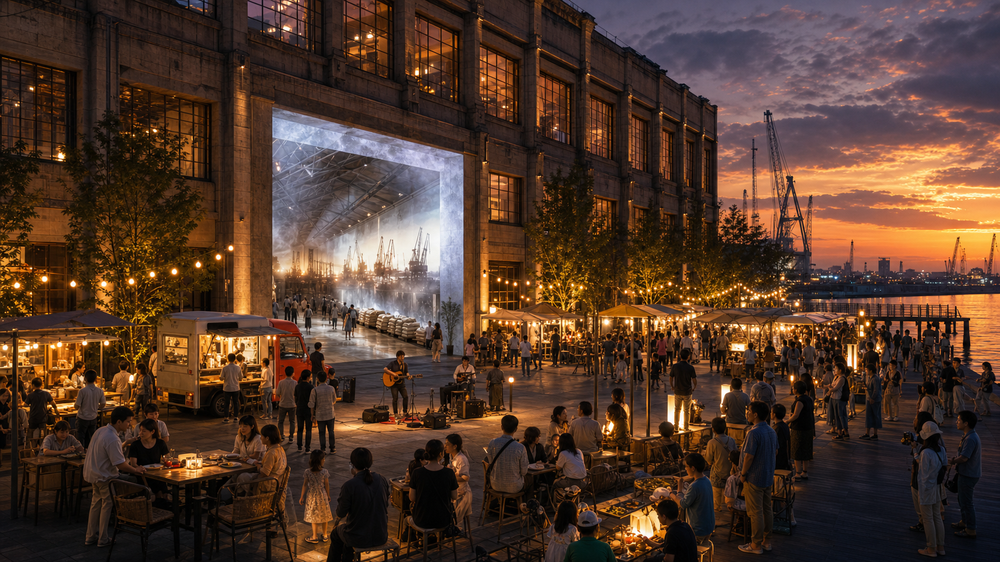
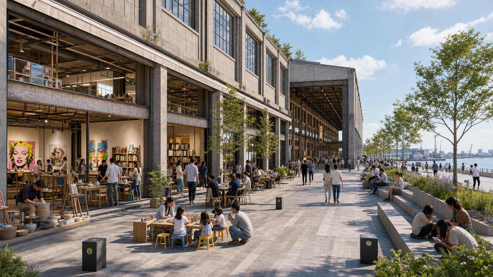

인천 상상플랫폼이
매주 움직일 수 있는
운영 구조.
관객 보유 IP를 통해 목적 방문의 계기를 만들고,
권역형 상설 방문지로 확장 가능한 흐름을 설계합니다.
상상플랫폼은 더 설명해야 할 공간이라기보다, 매주 작동할 수 있는 이유를 만들어야 할 공공자산입니다.
1,002억 원 규모의 공공자산에 관객, 운영자, 행사 IP, 브랜드 예산, 재방문 데이터를 단계적으로 연결하는 구조가 필요합니다.
상상플랫폼은 지금 성수처럼 우연히 들르는 곳이 아니라, 목적이 있어야 움직이는 베뉴입니다.
목적이 분명한 관객 보유 IP를 통해 첫 방문의 이유를 만들고, 이를 반복 방문으로 전환하는 흐름이 필요합니다.
첫 6개월은 수익보다 목적 방문이 반복될 수 있다는 증거를 만드는 기간입니다.
오늘의 질문
상상플랫폼을 "공간"이 아니라 "매주 움직이는 운영 구조"로 보면
무엇이 달라지는가.
상상플랫폼의 진짜 문제.
공간 자체보다, 초기 운영모델과 수요 형성 구조를 함께 보완할 시점입니다.
이 4가지를 함께 작동시키는 것이 1,002억 원 규모 공공자산의 활용도를 높일 다음 과제입니다.
| 관찰된 현상 | 정책적 해석 |
|---|---|
| 대형 앵커 테넌트 철수 | 민간이 부담해야 할 고정비와 수요 불확실성이 컸던 구조입니다. |
| 핵심 공간 공모 유찰 | 민간이 공간이 아니라 모객 리스크를 크게 본 것입니다. |
| 행사 때만 방문객 증가 | 상상플랫폼은 편성될 때 반응하는 공간입니다. |
기존 방식은 시장에서
한계가 확인됐습니다.
민간이 크게 본 것은 가격보다, 큰 공간을 통째로 운영해야 하는 부담과 모객 불확실성입니다.
상상플랫폼 입점 사업자 모집
6개월 시즌 편성·집객·B2B 유치 운영사
공간을 통째로 맡길 사업자
관객 보유 IP를 데려올 운영 주체

갈 이유가 있을 때만
공간은 채워졌습니다.
사람들은 상상플랫폼이라는 이름보다,
먹을 것·볼 것·할 것이 있는 구체적인 행사에 반응했습니다.
인천e지 쿠폰 사용도 평소 대비 크게 증가.
사진·영상 확산까지 이어짐.
목표부터 다시 잡아야 합니다.
처음에는 목적형 베뉴로 시작하고, 최종적으로는 계속 찾는 권역형 방문지로 키워야 합니다.
처음부터 매일 사람이 오는 상설 명소는 단계적 접근이 필요한 목표. 그렇다고 행사장으로만 두는 것도 ✗.
목적형 베뉴
키즈·푸드·펫·K-content·270m 워크스루처럼 일부러 찾아갈 이유를 만듭니다.
반복형 시즌 공간
검증된 IP를 정례화하고, 팝업을 단기 입점과 크리에이터 빌리지로 확장합니다.
권역형 상설 방문지
내항 재개발·1883 개항광장·개항장·월미도·차이나타운과 연결되어 자연스럽게 들르는 문화 거점이 됩니다.
이제 공간이 아니라편성입니다.
목적 방문을 만들려면,
임대보다 먼저 시간표 · IP · 운영자가 필요합니다.
공간 임대에서 시즌 편성으로.
상상플랫폼에는 임대사업자가 아니라 방송국 편성국처럼 움직이는 운영 체계가 필요합니다.
매주 무엇을 열고, 누가 관객을 데려오며, 어떤 브랜드가 비용을 내고, 어떤 커뮤니티가 확산시킬지를 편성해야 합니다.
·브랜드 팝업·야간 프로그램을
월별 배치
운영사·커뮤니티
섭외·계약
재방문 의향을
다음 제안서로 전환
관객을 가진 IP를
먼저 데려옵니다.
상상플랫폼이 처음부터 직접 관객을 모으기보다,
관객 보유 IP가 상상플랫폼을 활용하고 싶어지는 조건을 먼저 만들어야 합니다.
민간이 들어올 수 있는
조건을 먼저 만듭니다.
초기 예산은 단기 수익을 보장하는 예산이 아니라,
민간이 들어올 수 있다는 검증 데이터를 만드는 예산입니다.
파일럿 조건부 사용료
행사사와 브랜드의 진입 장벽을 낮춥니다.
초기 운영 리스크 완충
운영자가 첫 회차 리스크를 과도하게 부담하지 않도록 설계합니다.
공동 홍보비
모객 부담을 공공과 민간이 나눕니다.
현장 운영 지원
안전·부스·동선·결제·CS 부담을 낮춤.
콘텐츠 제작비
사진·숏폼·보도자료·후속 세일즈 자료를 확보합니다.
파일럿 구조 + 졸업 조건
2주 팝업 → 3~6개월 단기 입점 → 1년 상설 입점. 공개모집·기간 제한·성과 기준을 두는 시장 검증 장치입니다.
운영 PMO는
무대감독이어야 합니다.
콘텐츠를 전부 직접 만드는 제작자가 아니라,
외부 IP가 성공하도록 판을 짜는 무대감독.
첫 6개월은 확장 가능성을
검증하는 기간입니다.
목표는 단기 수익보다 "반복 가능한 운영 모델이 보이는지" 확인하는 데 두어야 합니다.
방문객이 많아도 민원과 운영 부담이 크고 재참여 신호가 약하면 확장은 보류합니다. 반대로 방문객이 중간 수준이어도 재참여 의향과 B2B 문의가 확인되면 다음 시즌 검토 대상으로 봅니다.
근거와 운영 기준
첫 6개월 KPI는 방문객 숫자 하나만으로 보면 안 됩니다. 행사별 매출·부스 재참여율·방문자 DB·SNS 확산·민원 건수·다음 B2B 문의까지 같이 봐야 합니다.
그래야 단발 이벤트인지, 반복 가능한 운영 모델인지 구분할 수 있습니다.

270m
개항 워크스루.
첫 방문 목적 → 계절별 재방문 장치 → 내항 권역 동선으로 확장합니다.

낮 · 저녁 · 밤,
반복 방문을 만드는 시간표.
시간대별 목적이 반복되면, 상상플랫폼은 주말 시간표가 있는 공간이 됩니다.
가족 · 체험
키즈 체험·공예·플리마켓·카페·조용한 워크스루를 주말 루틴으로 만듭니다.
먹거리 · 데이트
야시장·푸드트럭·버스킹·창고 조명을 월 2회 이상 반복 운영합니다.
제한적 야간 체류
실내 중심의 소규모 라이브·야간 프로그램을 안전 기준 안에서 검증합니다.
B2B 제안은
기다리지 말고 직접.
상상플랫폼은 알려지면 쓰는 공간이 아니라, 활용 장면을 먼저 제안해야 선택되는 베뉴입니다.
재원은 임대료 하나만으로
만들 수 없습니다.
초기 재원은 공공 마중물 + 매출쉐어 + 브랜드 스폰서 + B2B 대관을 혼합해야 합니다.
방문·매출·재참여·B2B 문의·관리되는 민원 — 다음 민간 자금을 부르는 증거를 만드는 비용입니다.
6개월의 실험이권역의 미래를 엽니다.
작은 파일럿의 데이터가
내항 권역 전체의 방문 흐름으로 이어질 수 있습니다.
상상플랫폼 = 항구형 도시공원
콘텐츠 플랫폼.
단독 목적지가 아니라, 내항 재개발 권역에서 자연스럽게 들르는 첫 문화 거점입니다.
코스가 반복되면 "일부러 한 번 가는 곳"에서 "내항에 오면 자연스럽게 들르는 곳"으로.

중기에는
운영자를 키워야 합니다.
목적형 행사로 모은 관객을
검증된 운영자·상설 입점·오픈스튜디오로 이어야 반복 방문이 생깁니다.
그래서 오늘 필요한 것은방향의 정리입니다.
모든 것을 확정하는 자리가 아니라,
6개월 안에 검증할 실행 방향을 맞추는 자리입니다.
중요한 6가지 방향.
모든 장기 계획을 당장 확정할 필요는 없습니다.
다만 6개월 파일럿으로 검증할 방향은 정리할 필요가 있습니다.
5가지 실행 패키지.
목적형으로 시작 → 반복형으로 키움 → 권역형 상설 방문지로.
내항 재개발 권역 안에서 계속 찾는 상설 방문지로 성장할 가능성을 만들어가야 합니다.
목적 방문의 계기를 만들겠습니다
6개월 파일럿을 통해
키즈·푸드·펫·K-content·270m 워크스루를
우선협의·프리뷰 형태로 묶어 검증합니다.
"일부러 찾아갈 이유"를 제시할 수 있습니다.
반복 가능한 시간표를 설계하겠습니다
야시장·마켓·워크스루·
야간 음악 프로그램을
낮·저녁·밤의 시간표로 배치하고,
정례화 가능성을 검증합니다.
"이번 주말에 다시 갈 이유"를
만들 수 있습니다.
검증된 운영자가 성장할 수 있는 구조를 만들겠습니다
팝업 → 단기 입점 → 상설 입점·
크리에이터 빌리지로
이어지는 단계 구조를 검토합니다.
"계속 바뀌지만 믿고 가는 공간"에
가까워질 수 있습니다.
내항 권역과의 연결성을 강화하겠습니다
1883 개항광장·개항장·수변·
월미도·차이나타운 동선을
하루 코스로 묶는 방향을
제안합니다.
다음 투자를 검토할 근거를 축적하겠습니다
방문자·매출·DB·민원·
재참여·B2B 문의 데이터를
축적합니다.
2028년 이후 권역형 상설 방문지로
확장 가능성을 판단할 근거가
됩니다.
감사합니다.
상상플랫폼이 매주 움직일 수 있는 공공자산에 가까워지도록,
관객·운영자·행사 IP·브랜드 예산·재방문 데이터를
단계적으로 연결하는 방향을 제안드립니다.
첫 6개월은 확장을 약속하는 기간이 아니라, 확장 가능성을 검증하는 기간입니다.
그 검증 위에서, 상상플랫폼은 내항 권역의 상설 방문지로 함께 성장할 수 있습니다.
이어지는 부록과 FAQ에서 본문에서 다루지 않은 상세 자료와 예상 질문을 확인하실 수 있습니다.
부록 상세 자료.
발표 본문에서 다루지 않은 상세 내용을 주제별로 펼쳐 볼 수 있게 정리했습니다.
A. 270m 개항 워크스루 상세
A-1. 핵심 상품 4종
270m 개항 워크스루 — 해무·기적·크레인·곡물·개항거리·미래 내항으로 이어지는 선형 동선. "상상플랫폼에 가면 떠올릴 수 있는 대표 경험"을 만드는 첫 방문 명분.
개항 포토 트리거 — 창고 입구·기둥·외벽·광장·야시장 출구 촬영 지점. 초기 확산을 만드는 UGC 유도 장치.
워크스루 프리뷰 — 야시장 방문객이 10분 안에 경험할 수 있는 일부 구간. 전체 구축 전 반응 검증.
브랜드 쇼케이스 동선 — 자동차·아웃도어·로컬 브랜드 촬영과 체험. B2B 세일즈 상품으로 전환.
A-2. 단계적 구축 4단계
1단계 — 입구·기둥·외벽·광장 포토 트리거 5개 설치. 판단 기준: 촬영률·공유율·체류시간.
2단계 — 내부 3개 프리뷰 구간 운영. 판단 기준: 야시장 전환율·만족도·민원.
3단계 — 야시장·브랜드 팝업과 패키지화. 판단 기준: 브랜드 문의·B2B 판매 가능성.
4단계 — 성과 확인 후 270m 전체 동선 확장. 판단 기준: 스폰서·민간 투자·운영수익.
B. 1883 항만 나이트
운영 구성
기본 콘셉트 — 금·토 저녁, 워크스루 프리뷰 + 야시장 + 소규모 라이브 + 로컬 F&B 연결.
운영 시간 — 1단계는 21시 이전 야외 운영을 마무리하고, 이후는 실내 중심의 제한 운영으로 검토.
장소 — 1883 개항광장·창고 내부 일부·실내 라이브 구역.
수익 — F&B 수수료·브랜드 협찬·티켓형 프로그램·B2B 초청 행사.
관리 — 데시벨 기준·보안 인력·미성년자 관리·응급 대응·민원 창구 운영.
C. 크리에이터 빌리지와 체류형 창작 프로그램
장르별 운영 방식 5종
팝아트·그래픽 — 시즌 전시·굿즈마켓·라이브 페인팅. 촬영과 판매가 동시에 일어남.
음악 — 소규모 라이브·커버댄스·팬덤 행사. 젊은 층 방문과 야간 체류를 만듦.
공예·디자인 — 워크숍·클래스·마켓. 가족·관광객 체험 수요를 만듦.
식문화 — 로컬 푸드·탭룸·푸드마켓. 야시장과 평일 소비를 연결.
미디어·영상 — 워크스루 테마 제작·숏폼 촬영. 공간 자체가 확산되는 장면을 만듦.
그 외 확장 가능 키워드 — 일러스트·캘리그래피·세라믹·우드크래프트·금속공예·가죽·패션·주얼리·향수·캔들·플라워·식물·반려동물·키즈·웰니스·요가·필라테스·VR·AR·게임·e스포츠·스트리밍·팟캐스트·북스토어·진(zine)·아트북·사진·필름·아날로그·LP·바이닐·재즈·인디밴드·DJ·EDM·국악·전통공예·테크아트·미디어아트·NFT·로봇·메이커·DIY·코딩·로컬 양조·내추럴 와인·스페셜티 커피·티·디저트·베이커리·비건·푸드페어링·바리스타·소믈리에·셰프 레지던시.
D. 재원과 민간투자 구조
왜 장기 투자 구조는 처음 카드가 아닌가
SPC/JV를 처음부터 전면에 세우면 민간은 수요 검증 자료를 우선 확인합니다. 따라서 운영 성과와 현금흐름이 어느 정도 확인된 뒤 민관 공동투자 구조를 검토하는 것이 맞습니다.
재원 5단계 진화
01 공공 마중물 예산 — 공간 제공·운영비 일부·앵커 행사 유치·공동 홍보.
02 매출쉐어와 행사 매출 — 부스비·입장권·F&B·굿즈 판매.
03 브랜드 스폰서와 B2B 대관 — 신제품 체험·기업행사·공공기관 행사.
04 성과 기반 민간 파트너 유치 — 정례 팝업·시즌 스폰서·고정 운영사.
05 SPC/JV 등 장기 민관 공동투자 구조 검토 — 검증된 수익과 운영 데이터를 기반으로 확장.
E. 해외 벤치마킹
공공자산 + 민간 운영 모델
Granville Island (밴쿠버) — 정부 소유 공간에 민간 운영·시장·예술·식문화를 결합. → 공공자산을 민간 편성과 상업 수익으로 활성화하는 모델.
HafenCity (함부르크) — 항만 재개발을 장기 권역 서사로 구축. → 내항 1·8부두 재개발과 상상플랫폼을 권역으로 설명.
산업시설 재생 + 도시 동선
Tate Modern (런던) — 산업시설 재생과 강변 동선의 결합. → 창고형 공간을 도시 산책·문화 방문의 목적지로 전환.
TIRPITZ (덴마크) — 역사 공간과 선형 동선의 몰입 경험. → 270m 창고 동선을 개항·항만 경험으로.
Wynwood (마이애미) — 폐창고 지역을 스트리트아트·이벤트로 재생. → 촬영·공유가 일어나는 로컬·브랜드 팝업 구역.
야간·체류형 프로그램
La Villette (파리) — 공원·전시·음악·야외의 복합 운영. → 1883 개항광장과 실내 공간의 도시공원형 운영.
V&A Friday Lates (런던) — 박물관 야간 프로그램으로 새 고객층 유치. → 야간 음악 프로그램·소규모 라이브의 공공형 운영 참고.
The Met Date Night (뉴욕) — 야간 관람·공연·체류 결합. → 저녁 이후 체류형 프로그램을 안전하게 표현하는 방식.
Meow Wolf (미국) — 몰입형 경험·촬영·재방문 장치 결합. → 워크스루 포토 트리거와 분기별 테마 교체 참고.
FAQ.
Q1. 기존 공모가 유찰된 이유를 무엇이라 생각하십니까?
민간이 상상플랫폼 자체를 부정적으로 본 것이 아니라, 고정비와 모객 리스크를 함께 부담해야 하는 운영 조건을 크게 본 것입니다. 통임대가 아니라 시즌 편성·팝업·매출연동·단계 성장 구조로 바꿔야 합니다.
Q2. 이번에는 민간이 정말 들어올 것이라고 보십니까?
참여 조건이 구체화되어야 합니다. 공간·운영 지원·공동 홍보·초기 운영 리스크 완충·사진·영상 자료화·다음 회차 세일즈 연결이 함께 제시되면 참여를 검토할 이유가 분명해집니다.
Q3. 기존 전시형 운영의 한계를 반복하지 않으려면 어떻게 합니까?
단독 전시가 아니라 행사 IP·브랜드 팝업의 체험 가치를 높이는 대표 경험입니다. 처음부터 전체 구축하지 않고 프리뷰 구간으로 체류시간·촬영률·전환율을 검증해야 합니다.
Q4. 이 방안을 추진하려면 추가 예산이 많이 필요하지 않겠습니까?
처음부터 큰 시설 투자를 하자는 것이 아닙니다. 초기에는 민간이 들어올 수 있는 조건을 만드는 마중물 예산이 필요합니다. 단기 수익보다 검증 데이터(방문자·매출·B2B 레퍼런스) 확보를 목적으로 하는 예산입니다.
Q5. 파일럿 조건부 사용료가 형평성 논란을 부르지 않겠습니까?
공개모집·기간 제한·성과 기준·졸업 조건을 명확히 하면 파일럿 운영이 됩니다. 2주 팝업·3~6개월 단기 입점·1년 상설 입점으로 단계를 나누고 성과 기준으로 결정합니다.
Q6. 야간 운영은 인력·안전 측면에서 부담이 크지 않겠습니까?
처음부터 늦은 시간대의 대규모 야외 프로그램을 운영하자는 것이 아닙니다. 1단계는 21시 이전 야외 프로그램 중심, 2단계는 21시 이후 실내 소규모 라이브, 3단계는 허가·방음 기준을 갖춘 제한적 야간 프로그램입니다.
Q7. 내항 재개발과 함께 가져갈 이유가 있다고 보십니까?
상상플랫폼을 단독 시설로 보면 부담이 큽니다. 그러나 내항 재개발 권역의 첫 문화 거점으로 보면, 이미 만들어진 공공자산이 권역 방문의 출발점이 될 수 있습니다. 지금부터 사람이 찾는 시간표를 만들어야 향후 재개발 권역의 유동 흐름과 자연스럽게 연결될 수 있습니다.